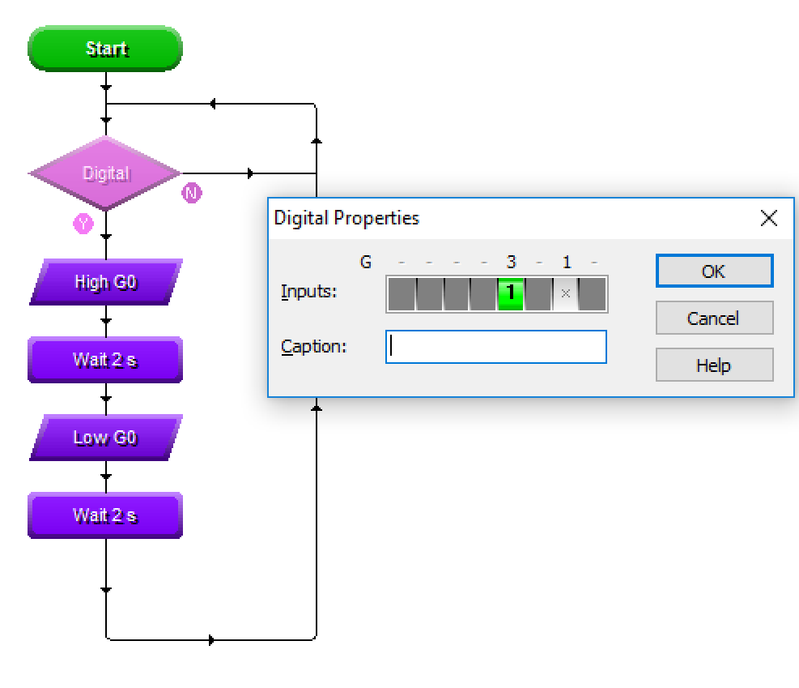

PIC Circuits
Table of Contents

1 Adding Inputs
Design time
- Our PIC so far is quite limited. While its great that it can flash in patterns (it could signal SOS in Morse code), but PICs become more powerful when they can interact with the World around them.
- Modify your circuit diagram to add a PTM (Push to Make) switch and 10k resistor, as shown in the screenshot below. Make sure you connect the bottom of the switch to input 3 on the PIC.

- If you run your circuit now, you'll see that clicking the button doesn't change the way the program behaves. This is because we've not told the PIC what we'd like to do yet.
- Go back to your Flowchart, and add a "Digital" diamond to the top of the program, as shown in the picture below. Double-click the diamond, and set it to check if input 3 is turned on.

- Connect the flow lines as shown in the picture above, then go back to your circuit and run it. Click on the switch to see what happens.
- Now go back to the flowchart and click play. While the simulation is running, you can click once on the diamond, and simulate pushing button 3 from there.
Coding time
- Modify the program so that pushing the button and holding it down turns on the LED, and releasing it turns it off. Save this as "PIC Torch.cwz"
- Change it again, so that when you push and hold the button, it flashes on and off slowly. When the button is released, make it flash quickly.
- Add two more LEDs to your circuit diagram, and make a note of which output pin they're connected to. You can change their colour by double-clicking them. Make output 0 red, output 2 amber and output 4 green.
- Write a program that makes each of the LEDs come on for 2s at a time while the button is held down. When released, they should all turn off.
- This is the Silver badge - Progress ladder, Yellow - With assistance, write a simple program to manipulate outputs. You can turn on multiple LEDs at once. Modify the code so that when the button is pushed, they simulate a set of traffic lights (make then change once every 2s). Save this as "PIC-traffic.cwz".
- Congratulations! This program (or any of the others you've made) could be put straight onto the circuit you're going to make in your practical sessions.
Badge It
- Complete the quiz for the gold and silver badges
- Click on this link to complete the quiz.
- Make sure you screenshot and upload your work along with the quiz.
- Complete the Traffic Light simulation and hand in for the platinum badge.